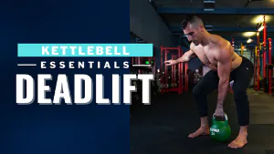

B793 · Kettlebell Essentials: The Deadlift
Hi {first_name},
This week’s video is essential. Especially if you are newer to lifting, please make a point of watching and practicing this video.
The deadlift represents the most essential movement pattern (i.e. bend pattern), that you will perform with a kettlebell. Practicing and using great technique is part of how you develop a body that is strong, stable, athletic and prepared for more advanced movements. Athletes have to make minute adjustments on the fly and practicing control of their body throughout this, and any lift, is a great way to support this ability.
Watch today’s video breakdown and practice a few sets of this movement as you maintain awareness of your: spine, feet, shoulders and grip.
Own this deadlift technique and it will serve you for years.
 Train Intentionally, Mike Salemi
P.S. 4th of July sales are going down soon! Stay tuned for discounts on online programs - Kettlebell Lifestyle & Mastering The Kettlebell, PLUS 1-on-1 virtual Somatic Release Breathwork Sessions!
|